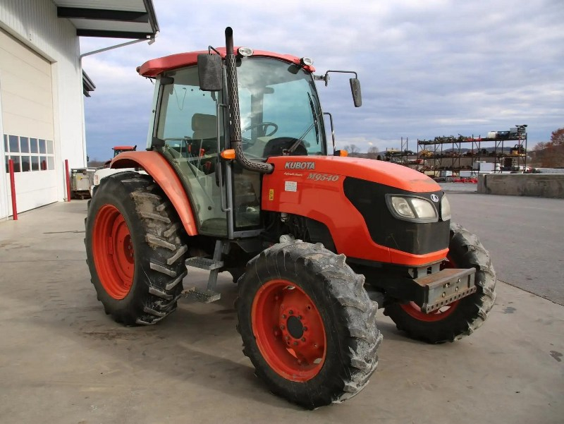

Kubota M9540

Kubota M9540 – це один із найпопулярніших універсальних тракторів середньої потужності, який цінується за свою надійність, простоту та компактні розміри. Завдяки відсутності складної електроніки та механічному впорскуванню пального (у ранніх версіях), цей трактор є надзвичайно витривалим і легким в обслуговуванні.
Головною особливістю моделі є передній міст із конічними шестернями та унікальна система Bi-Speed Turn. При великому куті повороту коліс ця система автоматично прискорює передню вісь, що дозволяє трактору розвертатися з надзвичайно малим радіусом і мінімальним пошкодженням дернини. Трактор зазвичай комплектується трансмісією з гідравлічним реверсом (Hydraulic Shuttle), що дозволяє змінювати напрямок руху без натискання педалі зчеплення. Це робить M9540 ідеальним вибором для роботи з фронтальним навантажувачем, у садах або на тваринницьких фермах.
| Параметр | Значення |
|---|---|
| Клас тяги | 1.4 |
| Тип ходової частини | колісний |
| Колісна формула | 4х4 (з портальним переднім мостом) |
| Тип рами | жорстка конструкція |
| Основне призначення | польові роботи, догляд за посівами, овочівництво, садівництво та робота з навантажувачем |
| Параметр | Значення |
|---|---|
| Модель | Kubota V3800-DI-T / V3800-CR-TE4 |
| Тип двигуна | 4-циліндровий, дизельний, з турбонаддувом |
| Спосіб охолодження | рідинне |
| Розташування циліндрів | рядне, вертикальне |
| Робочий об’єм | 3,8 л (3769 см³) |
| Номінальна потужність | 70,8 кВт (95,0 к.с.) |
| Максимальний крутний момент | 310 – 330 Н·м (при 1400–1600 об/хв) |
| Номінальні оберти | 2600 об/хв |
| Очищення вихлопних газів | закрита вентиляція картера, (DPF у версіях Tier IV) |
| Питома витрата (оптимальна) | 215 г/кВт·год |
| Параметр | Значення |
|---|---|
| Тип КПП | синхронізована (F36/R36 або F12/R12) |
| Кількість передач | 36 вперед / 36 назад (з Dual Speed) або 12/12 |
| Діапазон швидкості вперед | 0,43 – 38,5 км/год |
| Діапазон швидкості назад | 0,43 – 38,5 км/год |
| Тип зчеплення | багатодискове "мокрое" (гідравлічне) |
| Реверс | гідравлічний (Hydraulic Shuttle) |
| Вал відбору потужності (ВВП) | 540 / 540E (опція — 1000) об/хв |
| Режим (Діапазон) | Швидкість, км/год | Особливості тяги | Тягове зусилля (макс), кН |
|---|---|---|---|
| Low (Нижній) | 0,43 – 7,8 | Максимальна тяга для важких робіт | 32,5 – 34,0* |
| High (Верхній) | 8,0 – 38,5 | Економічний транспортний режим | 12,0 – 16,0 |
Гідравлічний реверс дозволяє змінювати напрямок руху без витискання педалі зчеплення, що підвищує продуктивність на 15–20% при роботі з навантажувачем.
| Параметр | Значення |
|---|---|
| Тип коліс | пневматичні шини |
| Шини передні (стандарт) | 320/85 R24 |
| Шини задні (стандарт) | 420/85 R34 |
| Радіус ведучого колеса (заднього) | 0,780 м (Rw) |
| Колія передніх коліс | 1520 – 1620 мм |
| Колія задніх коліс | 1520 – 1920 мм |
| Кліренс (дорожній просвіт) | 480 мм |
| Передній міст | портальний, з конічними шестернями (Bevel Gear) |
| Режим роботи | Витрата, л/год |
|---|---|
| Важкі польові роботи (оранка, глибока культивація) | 11,8 – 14,2 л/год |
| Середні польові роботи (посів, дисковка, обприскування) | 7,5 – 9,8 л/год |
| Робота з фронтальним навантажувачем / фермерські роботи | 5,5 – 7,2 л/год |
| Транспортні роботи (переїзди з причепом) | 6,8 – 8,5 л/год |
| Холостий хід (зупинки) | 0,9 – 1,1 л/год |
| Параметр | Значення |
|---|---|
| Експлуатаційна (робоча) вага | 3305 кг (без баласту) |
| Максимально допустима вага | 6200 кг |
| Довжина / Ширина / Висота | 3955 / 2030 / 2650 мм |
| Колісна база | 2250 мм |
| Об’єм паливного баку | 90 л (опція — 110 л) |
| Параметр | Значення |
|---|---|
| Гідравлічна система | шестеренний насос, 64,3 л/хв |
| Вантажопідйомність навіски | 3300 – 4100 кг |
| Максимальний тиск гідросистеми | 19,1 МПа |
| Радіус розвороту | 3,8 м (без гальм) |
| Особливості | Наявність системи Bi-Speed Turn для надзвичайного маневрування. Герметична кабіна з кондиціонером та обігрівачем входить у стандартну комплектацію. |